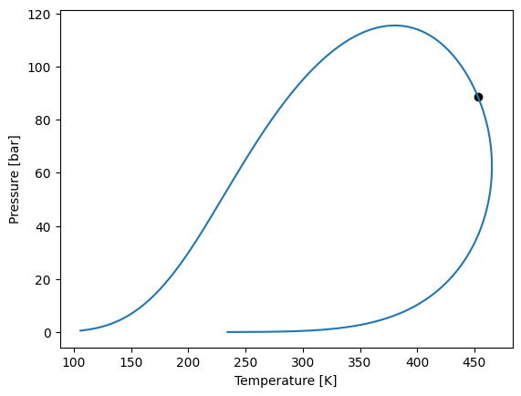
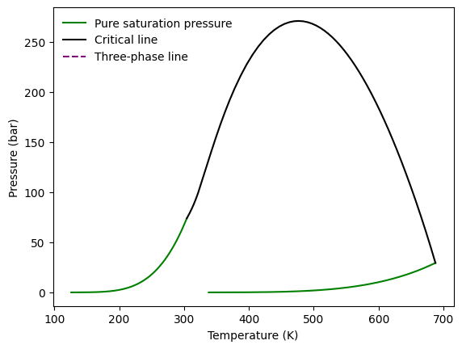
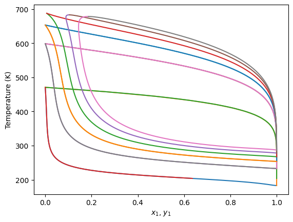

PC-SAFT
[1]:
import yaeos
m = [1.0582, 3.3004]
epsilon_k = [145.5257, 224.0780]
sigma = [3.6316, 3.8639]
model = yaeos.PCSAFT(m, sigma, epsilon_k)
[2]:
z = [0.5, 0.5]
env = model.phase_envelope_pt(z, kind="dew", p0=0.01)
env.plot()

[3]:
from yaeos import PSRK, GPEC
tc = [304.21, 687.7]
pc = [73.83000000000001, 29.4408]
w = [0.223621, 0.365434205640836]
c1 = [0.8255, 1.06539497171316]
c2 = [0.16755, -0.371283736082231]
c3 = [-1.7039, 0.756295830742416]
groups = [{117: 1}, {1: 2, 2: 3, 3: 1, 7: 1, 138: 1}]
model = PSRK(tc, pc, w, groups, c1, c2, c3)
gpec = GPEC(model, step_21=0.1)
gpec.plot_gped()
print(gpec._cl_ll)
None

[4]:
model.critical_line_liquid_liquid?
Signature:
model.critical_line_liquid_liquid(
z0=[0, 1],
zi=[1, 0],
pressure=2000,
t0=500,
)
Docstring:
Find the start of the Liquid-Liquid critical line of a binary.
Parameters
----------
z0: array_like
Initial global mole fractions
zi: array_like
Final global mole fractions
pressure: float
Pressure [bar]
t0: float
Initial guess for temperature [K]
File: ~/docs/programming/python/virtualenvs/thermo/lib/python3.13/site-packages/yaeos/core.py
Type: method
[5]:
for P in [1, 10, 20, 30, 40, 50]:
gpec.plot_txy(P)

[6]:
for i, T in enumerate([300, 400]):
gpec.plot_pxy(T, color=f"C{i}")